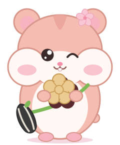

こがハムくん中学生のみなさん、こんにちは。こがハムくんです。このページの読み方を、ところどころで案内します。
市長と市議会のしくみ

こがハムくんポイントは「市長が案をつくり、市議会が決める」。だから政策は「何をするか」と「どこまで決まっているか」を分けて読むのがコツです。
市には、市民が選挙で選ぶものが2つあります。市役所のリーダーである市長と、市のことを話し合って決める市議会議員です。
市長
予算や条例の案をつくる
→
市議会
話し合って、決める（議決）
市のお金の使いみち（予算）は、市長が案をつくり、市議会の議決で決まります。市長が「やりたい」と言っても、市議会で認められなければ進みません。だから政策を読むときは、「なにをするか」だけでなく「どこまで決まっているか」も見ておくと役に立ちます。
市長の任期は4年です。
地方自治法（予算の調製・議会の議決・任期）にもとづく一般的な説明。特定の候補に限らない内容。
白井とおるの考え方
小金井には、人がいる
知恵がある
豊かな環境がある
挑戦する人がいるだから、それらをつなぐ。子どもと若者をつなぐ
若者と経験をつなぐ
市民と市役所をつなぐ
地域と大学をつなぐ
挑戦と仕事をつなぐつながれば、まちはもっとおもしろくなる。
そのために、市役所自身も変わる
人がつながる。挑戦が生まれる。まちの未来を創る。
政策2026 基本姿勢「みんなでつくる」のメッセージ全文（正本のまま）
7つの基本政策（10代に関係するところ）

こがハムくん文の終わりに注目。「検討します」は、やるかどうかをこれから調べて決める段階、という意味です。
全45項目のうち、10代に関係する18項目をのせています。文の終わりの言葉で、どこまで進める約束なのかが分かります。
始めます 新しく始める
取り組みます 進める
広げます 今より広げる
続けます 今のものを続ける
検討します やるかどうかを、調べて決める段階
01教育・子育て・若者
子どもと若者の未来をひらくまち、小金井
全11項目のうち、10代に関係する項目：6
- 取り組みます
部活動を地域に広げます。大学・専門学校などとの連携を強めます
P1-5 - 取り組みます
学校のトイレの改善を進めます
これまでの4年：小中学校トイレの洋便器化 80％を前倒し達成
P1-5T - 取り組みます
不登校の子どもとその家庭、文字の読み書きに困難がある子どもなどに、学びの支援をします
P1-7 - 検討します
教育相談や就学相談を充実させます。学校に行きづらい子どもが、自分に合った学び方で通える学校（学びの多様化学校）の設置を検討します
P1-8 - 広げます
若者の居場所や自習スペースを増やします
P1-9 - 取り組みます
ティーンズ会議を開くなど、若者の声を市政に活かし、地域の交流が進むようにします
P1-10
この分野の全11項目を見る →
02健康・福祉・地域交流
健康でつながって暮らせるまち、小金井
全7項目のうち、10代に関係する項目：6
- 取り組みます
公園や公共施設を、交流の場として活用します
P2-2 - 広げます
市内各所にベンチを増やし、歩いて楽しめるまちにします
P2-3 - 取り組みます
コミュニティバス（CoCoバス）の路線を維持し、利用を促します
P2-4 - 取り組みます
東小金井駅にも公衆喫煙所を設け、たばこを吸う場所を分けて、吸わない人が煙を吸わずに済むようにします（受動喫煙の防止）
P2-5 - 取り組みます
大人も子どもも、世代をこえていっしょに学び、交流できる、年齢を問わず学び続けられる教育（生涯教育）の機会を充実させます
P2-6 - 取り組みます
スポーツと芸術文化を盛んにし、心の豊かさと人のつながりをつくります
P2-7
この分野の全7項目を見る →
03防災・防犯・事故防止
安心して暮らせるまち、小金井
全5項目のうち、10代に関係する項目：3
- 取り組みます
地域の防犯力を高めるため、地域ぐるみの見守りの連携を強めます
これまでの4年：防犯機器購入補助事業を開始家庭などで防犯機器を設置する際の補助事業を、2025年度に続き2026年度も実施。
P3-1 - 取り組みます
実践的な災害訓練の実施、トイレ対策を充実させます
これまでの4年：防災用トイレトラック導入大規模災害時の避難所などの衛生環境を守るため、災害用トイレトラックの導入を決定。全国で相互にトイレトラックを派遣し合う「災害派遣トイレネットワークプロジェクト」に参加します。
P3-3 - 取り組みます
自転車の活用計画をつくります。自転車がかかわる事故を減らすため、啓発活動を強めます
P3-5
この分野の全5項目を見る →
04商工振興・文化交流・起業・市民協働
人と人がつながり、新しいことが生まれるまち、小金井
全5項目のうち、10代に関係する項目：0
この分野は、10代向けの印がついた項目はありません。
この分野の全5項目を見る →
05多様性・人権・平和
ちがいを力に換えるインクルーシブなまち、小金井
全5項目のうち、10代に関係する項目：1
この分野の全5項目を見る →
06環境・気候変動
豊かな自然を、未来へつなぐまち、小金井
全5項目のうち、10代に関係する項目：2
- 取り組みます
ごみの分別をわかりやすくします。生ごみの資源化、リサイクル・リユースを進めます
これまでの4年：生ごみ資源化モデル事業を実施家庭の生ごみ（野菜や果物のへた・芯・皮など）を回収して堆肥にするモデル事業を、2025年から実施。2026年度は拠点を拡充。
P6-4 - 続けます
気候変動の問題について若者が話し合う「わかもの気候市民会議」を続けます
これまでの4年：小金井市気候市民会議を開催若者を中心に、無作為抽出で約30名の市民が参加。3回の会議で話し合い、市長へ提言書を提出しました（2025年度）。
P6-5
この分野の全5項目を見る →
07変革を続ける市役所
人材育成の強化、外部人材・DX＆AI徹底活用、稼ぐ自治体へ
全7項目のうち、10代に関係する項目：0
この分野は、10代向けの印がついた項目はありません。
この分野の全7項目を見る →
これまでも、みんなでつくってきました
- 小金井市気候市民会議を開催若者を中心に、無作為抽出で約30名の市民が参加。3回の会議で話し合い、市長へ提言書を提出しました（2025年度）。2026年度は、若者に特化した「わかもの気候市民会議」を開催予定です。
- 中学生サミット・若者MIRAIトークの開催子ども・若者が意見を表明する機会をつくり、その声を反映する仕組みを検討するために実施。中学生サミットは「小金井（しょうがねい）を変えちゃう人の会」として、2026年度まで続けています。
- インクルーシブ公園整備事業「play here」3年間かけて、当事者や地域の関係者など多くの方から話を聞いて進めました。栗山公園、梶野公園、三楽公園の整備工事が完了。誰でも「ここで遊ぼう」を実現する取り組みを続けています。
- はけの森美術館で市民結婚式「シヴィルマリッジ」を実施総合学院テクノスカレッジと協働。学生が中心になって企画・運営しました（2026年2月）。
- 「こがねいデジタル平和資料館」WEBを公開協働事業提案制度で、市民団体と協働して作成。2025年3月に公開しました。
政策2026 基本姿勢「これまでも、みんなでつくってきました」（正本のまま）
白井とおるのプロフィール
- 1975年生まれ。大阪府枚方市出身。関西大学社会学部卒業
- 民間企業で約15年（企画営業、コミュニケーションデザイン）
- 2013年 小金井市議会議員に初当選／2022年11月 小金井市長に就任
- 家族は妻と中高生の子ども2人。毎日の朝食づくり担当
shiraisupporters.tokyo プロフィール欄（2026-10-12取得）